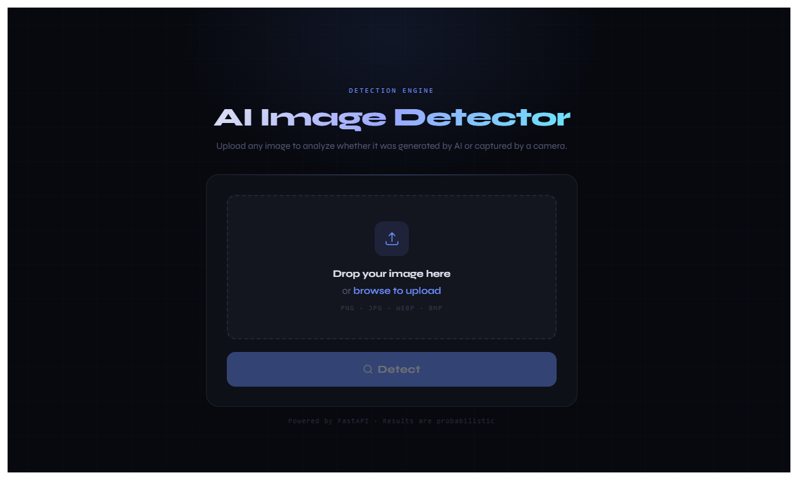
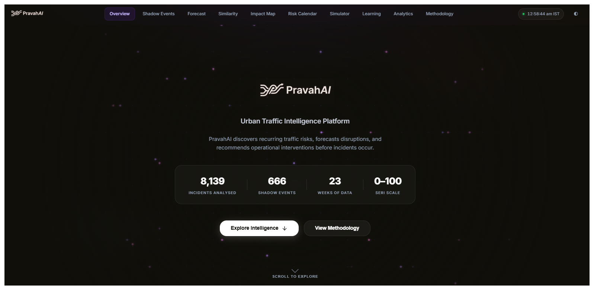
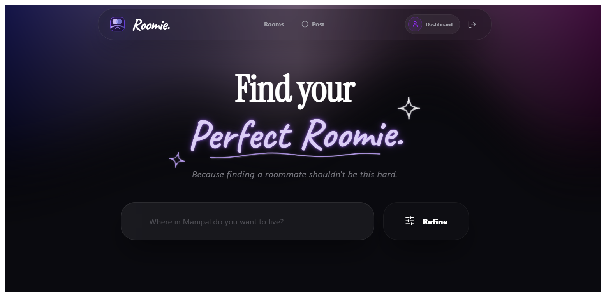
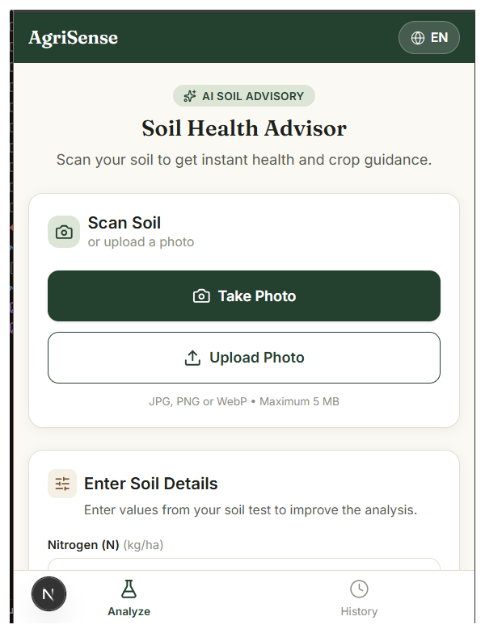

Hi, I'm
Priyali Jain
Computer & Communication Engineering Student | AI & Research Enthusiast
I'm a third-year CCE student at Manipal Institute of Technology, interested in artificial intelligence, research, and building technology that solves real-world problems.
About me
I'm a third-year Computer & Communication Engineering student at Manipal Institute of Technology with an interest in Artificial Intelligence, research, and technology. I enjoy exploring how technology can be used to solve practical problems and create meaningful user experiences.
Alongside academics, I have built full-stack and AI projects, researched AI literacy among engineering students, and presented machine learning work at IEEE CRAIS 2025. I also enjoy web development, UI/UX design, and learning new technologies.
Education & Experience
-
B.Tech, Computer & Communication Engineering
Currently pursuing a B.Tech in Computer & Communication Engineering with coursework spanning programming, computer networks, communication systems, and embedded technologies.
-
Virtual Project Internship, Infosys Springboard
Building an AI-powered soil analytics platform for nutrient assessment and crop advisory, combining CNN-based soil classification with a recommendation engine in a mobile-first web app.
-
AI Literacy Research
Mixed-methods study of AI literacy among engineering students (N = 94), using exploratory factor analysis, Sentence-BERT semantic scoring, thematic analysis, and multiple linear regression in JASP.
-
Mental Health Prediction
Machine learning classification work built with Python and Scikit-learn to predict mental health outcomes, presented at an IEEE conference.
-
Graphic Design Intern, Project Ecosanitation
Created design work for a sanitation-focused initiative.
Projects

PravahAI
An AI-powered urban traffic intelligence platform that analyses traffic violations and predicts event-driven congestion. It uses computer vision for vehicle detection and violation evidence, a "Shadow Event" method to spot recurring disruptions, and Gemini AI for risk insights. Qualified for Round 2 of Flipkart GRID 8.0.


AI-Powered Soil Analytics
A farmer-facing progressive web app built for my Infosys Springboard project internship. It classifies soil from a photo, takes nutrient and pH readings, and returns a soil health score with crop suggestions in English, Hindi, and Kannada.
More projects
-
Intelligent Gift Recommendation System
A GenAI agent app that uses the Claude API with a utility-scoring mechanism to recommend gifts. An IEEE paper on it is in progress.
Claude API · FastAPI · React -
Campus Event Management System
A role-based CRUD web app for campus events, backed by a normalized relational schema.
Flask · Oracle SQL · HTML/CSS/JS -
AI Stock Market Telegram Bot
A real-time market assistant that combines external APIs with an LLM, delivered through Telegram.
Python · APIs · LLM -
ACM-W Manipal Website
The official website for the ACM-W Manipal student chapter.
React
Skills
Languages
- Python
- C
- C++
- Java
- JavaScript
- SQL
- HTML
- CSS
AI & Machine Learning
- PyTorch
- Scikit-learn
- Computer Vision
- CNNs
- LLMs
- Prompt Engineering
- AI Agents
- LangGraph
Web & Backend
- React
- Tailwind CSS
- Node.js
- Express
- FastAPI
- Flask
- REST APIs
Data, Cloud & Tools
- MongoDB
- Oracle SQL
- BigQuery
- Google Cloud
- Vercel
- Git & GitHub
- Power BI
- Excel
- Figma
- Canva
Leadership
- Class Representative Computer & Communication Engineering
- ACM-W Manipal Management Committee
- Apple Developers' Group Management Committee
- The Data Alchemists Management Committee
- LeanIn Manipal Management Committee
- IECSE Manipal Working Committee
- Chords & Co. Graphic Design, HR, PR
Certifications
- Google Cloud Gen AI Academy 2.0; skill badges in Data Cloud, BigQuery streaming analytics, and ML APIs
- Infosys Springboard Generative AI, Deep Learning, Prompt Engineering, AI Primer
- IBM Agentic AI (Coursera)
- Agentic AI LangChain and LangGraph; Fundamentals of Building AI Agents
- Deloitte Australia Data Analytics Job Simulation (Forage)
Interests
- Artificial Intelligence Exploring AI and machine learning, especially healthcare AI and human behaviour analysis.
- Research Interested in research, experimentation, and understanding how technology affects people.
- UI/UX & Design Enjoy creating interfaces that are intuitive, functional, and visually appealing.
- Technology Curious about wearable computing, mobile intelligent systems, and building solutions for real-world problems.